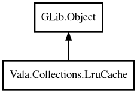

LruCache
Object Hierarchy:

Description:
public class LruCache<K,V> : Object
LRU cache with optional TTL and cache-miss loader.
Content:
Creation methods:
- public LruCache (int max_entries, HashFunc<K> hash_func, EqualFunc<K> equal_func)
Creates an LRU cache.
Methods:
- public V @get (K key)
Returns value for key.
- public void clear ()
Clears all entries.
- public bool contains (K key)
Returns whether key exists and is not expired.
- public void put (K key, V value)
Inserts or replaces cache entry.
- public bool remove (K key)
Removes entry by key.
- public uint size ()
Returns number of current entries.
- public Pair<int,int> stats ()
Returns cache statistics (hits, misses).
- public LruCache<K,V> withLoader (owned CacheLoaderFunc<K,V> loader)
Sets cache-miss loader.
- public LruCache<K,V> withTtl (Duration ttl)
Sets entry TTL.
Inherited Members:
All known members inherited from class GLib.Object
- @get
- @new
- @ref
- @set
- add_toggle_ref
- add_weak_pointer
- bind_property
- connect
- constructed
- disconnect
- dispose
- dup_data
- dup_qdata
- force_floating
- freeze_notify
- get_class
- get_data
- get_property
- get_qdata
- get_type
- getv
- interface_find_property
- interface_install_property
- interface_list_properties
- is_floating
- new_valist
- new_with_properties
- newv
- notify
- notify_property
- ref_count
- ref_sink
- remove_toggle_ref
- remove_weak_pointer
- replace_data
- replace_qdata
- set_data
- set_data_full
- set_property
- set_qdata
- set_qdata_full
- set_valist
- setv
- steal_data
- steal_qdata
- thaw_notify
- unref
- watch_closure
- weak_ref
- weak_unref